응용지질기사 (2017-05-07 기출문제)
1과목: 암석학 및 광물학
1. 압력이 고정된 2성분계의 공융점에서 공존하는 상의 수는?
- 1
- 2
- 3
- 4
(정답률: 71%)

2. 기저역암(basal conglomerate)이란?
- 단층면 상에 있는 역암
- 부정합면 상에 있는 역암
- 퇴적층의 가장 하부에 있는 역암
- 해저나 호수의 저부에 있는 역암
(정답률: 71%)
3. 퇴적물 구조의 성숙도(成熟度)가 증가함에 따라 변화하는 것으로 옳은 것은?
- 분급도의 감소
- 점토의 양의 증가
- 안정광물의 양의 감소
- 구성입자의 원마도의 증가
(정답률: 79%)
4. 규장질 심성암을 국제지질과학연합(IUGS) 분류안으로 분류할 때 분류기준광물에 속하지 않는 것은?
- 석영
- 휘석
- 사장석
- 준장석
(정답률: 79%)
5. 변성암의 조직 중 입상변정질 조직에 해당하지 않는 것은?
- 입상 조직
- 몰타르 조직
- 모자이크 조직
- 구상변정질 조직
(정답률: 65%)
6. 퇴적암에서 나타나는 특징적인 구조가 아닌 것은?
- 편리
- 건열
- 사층리
- 물결자국
(정답률: 85%)
7. 암석을 물리화학적으로 변화시킬 수 있는 요소가 아닌 것은?
- 자력
- 유체
- 온도
- 압력
(정답률: 86%)
8. 모우드 분석(mode analysis)이란?
- 노두에서 각 구성광물의 함량을 계산하는 분석법이다.
- 분쇄한 암석에서 각 구성광물의 함량을 측정하는 분석법이다.
- 암석의 박편에서 각 구성광물의 함량을 측정하는 분석법이다.
- 화학분석으로 암석의 각 구성광물을 계산하는 분석법이다.
(정답률: 64%)
9. 변성작용에 영향을 주는 요인이 아닌 것은?
- 열
- 유체
- 편압
- 점성도
(정답률: 80%)
10. 다음 중 큰 결정들과 그들 사이를 메우는 작은 결정들 또는 유리질로 되어 있는 화성암의 조직은?
- 문상조직(graphic texture)
- 유리질조직(glassy texture)
- 반상조직(porphyritic texture)
- 포이킬리조직(poikilitic texture)
(정답률: 74%)
11. 다음 중 다이아몬드에서 보이는 광택은?
- 진주광택
- 수지광택
- 금속광택
- 금강광택
(정답률: 73%)
12. 다음 중 원자 간의 화학결합에 대한 설명으로 옳은 것은?
- 형석은 이온결합이다.
- 다이아몬드는 금속결합이다.
- 전기음성도의 차이가 크면 공유결합을 한다.
- 원자의 화학결합 형태는 결정의 성장에 반영된다.
(정답률: 69%)
13. 편광현미경에서 관찰되는 다색성(多色性)의 원인은?
- 방향에 따른 간섭현상의 변화
- 방향에 따른 소광현상의 변화
- 방향에 따른 광물의 두께의 변화
- 방향에 따른 광물의 빛 흡수정도의 변화
(정답률: 60%)
14. 다음 그림의 1, 2, 3 원자 중 부착에너지가 가장 큰 것과 이 방향으로 성장하는 면을 PBC의 수에 따라 구분하여 부르는 이름이 올바르게 짝지어진 것은?
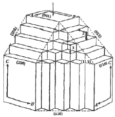
- 1-F면
- 3-K면
- 2-S면
- 1-S면
(정답률: 58%)
15. 대칭 요소의 수에 따라 결정을 분류하는 정족(晶族)의 가지 수는?
- 12
- 24
- 32
- 48
(정답률: 57%)
16. 다음 중 규산염광물이 아닌 것은?
- 감람석
- 자철석
- 정장석
- 투휘석
(정답률: 74%)
17. 다음 중 접촉쌍정의 종류에 해당하지 않는 것은?
- 반사쌍정
- 수직쌍정
- 평행쌍정
- 투입쌍정
(정답률: 55%)
18. Goldschmidt의 광물학적 상률(mineralogical phase rule)을 표시한 식은? (단, P=상의 수, F=자유도, C=성분의 수이다.)
- P+F=C-2
- P+C=F+1
- P=C
- P=C+F
(정답률: 56%)
19. 다음 중 이온결합성 광물에 대해 설명하는 법칙은?
- 보웬의 법칙
- 폴링의 법칙
- 오일러의 법칙
- 골드슈미트의 광물학적 상률
(정답률: 69%)
20. 다음 광물 중 탄산염 광물이 아닌 것은?
- 형석
- 능철석
- 방해석
- 마그네사이트
(정답률: 52%)
2과목: 구조지질학
21. 지사학 5대 법칙 중 “현재는 과거를 아는 열쇠이다.”가 해당하는 법칙은?
- 부정합의 법칙
- 동일과정의 법칙
- 지층누중의 법칙
- 동물군 천이의 법칙
(정답률: 78%)
22. 다음 그림은 우수향 단순 전단 운동에 의한 리델 전단을 표시한 것이다. 각 기호에 맞는 이름과 전단 측징이 잘못 연결된 것은?
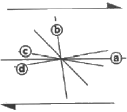
- ⓐ-Y 전단 : 우수향 전단
- ⓑ-공액 리델(R') 전단 : 좌수향 전단
- ⓒ-리델(R) 전단 : 우수향 전단
- ⓓ-P 전단 : 좌수향 전단
(정답률: 56%)
23. 다음 중 빙하와 관계가 깊은 것은?
- Fiord
- Karst 지형
- 리아스식 해안
- 악지지형(惡地地形)
(정답률: 80%)
24. 지층 내에 변형작용을 전혀 받지 않은 면이 존재하며, 이를 기준으로 외호의 지충들은 팽창변형을 받는 반면, 내호의 지층들은 수축변형을 받는 습곡은?
- 수동습곡(passive fold)
- 셰브론습곡(chevron fold)
- 요굴슬립습곡(flexural slip fold)
- 중립면습곡(neutral surface fold)
(정답률: 55%)
25. 지표 부근 5000m 정도까지의 지하에서 적용되는 지하증온율(geothermal gradient)은?
- 2℃/100m
- 3℃/100m
- 4℃/100m
- 5℃/100m
(정답률: 54%)
26. 리히터 규모 5.0인 지진의 에너지는 리히터 규모 3.0일 때의 에너지의 몇 배인가? (단, 에너지 E와 리히터 규모 M의 관계식은 log E=11.4+1.5M이다.)
- 10배
- 100배
- 1000배
- 10000배
(정답률: 77%)
27. 다음 중 인명 재산에 가장 큰 피해를 주는 지진파는?
- P파
- S파
- L파
- 동일하다.
(정답률: 81%)
28. 다음 중 리아스식 해안의 형성 원인은?
- 침강운동
- 융기운동
- 습곡작용
- 화산작용
(정답률: 72%)
29. 돌리네(doline) 구조가 발달할 수 있는 지층이 아닌 것은?
- 풍촌층
- 함백산층
- 막동층
- 두위봉층
(정답률: 48%)
30. 다음 중 해수면 변동이나 지각융기의 증거로 볼 수 없는 것은?
- 융기해빈(raised beach)
- 심성암과 변성암의 노출
- 해안단구(coastal terrace)
- 성장단층(growth fault)의 발달
(정답률: 65%)
31. 공액절리에서 두 절리면의 교차선과 평행한 주응력축은?
- 수직 주응력축
- 중간 주응력축
- 최대 주응력축
- 최소 주응력축
(정답률: 38%)
32. 습곡된 지층의 단면에서 수평선을 기준으로 습곡된 면이 가장 높은 곳에 위치한 점을 무엇이라 하는가?
- 골(trough)
- 날개(limb)
- 정부(crest)
- 한지(hinge)
(정답률: 63%)
33. 주향과 경사가 N30°E, 45°SE 로 주어진 면구조의 S60°E 방향의 위경사는?
- 0°
- 45°
- 60°
- 90°
(정답률: 63%)
34. 다음 중 신생대 제4기에 해당하는 세(Epoch)는?
- 에오세
- 마이오세
- 올리고세
- 플라이스토세
(정답률: 63%)
35. 다음 중 섭입대와 관련이 없는 것은?
- 멜란지
- 에클로자이트
- 쌍모식 화산활동
- 안산암질 마그마
(정답률: 51%)
36. 다음 중 야외에서 단층을 구분하는 증거로 사용되지 않는 것은?
- 압쇄암(mylonite)
- 단층비지(fault gouge)
- 채터마크(chattermark)
- 단층각력암(fault breccia)
(정답률: 66%)
37. 최대 주응력이 100MPa, 최소 주응력이 20MPa일 때 최소 주응력축과 각(θ)이 40°인 면에 작용하는 수직응력(σn)과 전단응력(τ)으로 옳은 것은?
- σn : 67MPa, τ : 39MPa
- σn : 72MPa, τ : 25MPa
- σn : 75MPa, τ : 21MPa
- σn : 78MPa, τ : 17MPa
(정답률: 51%)
38. 다음 중 변성구조에 속하지 않는 것은?
- 엽리
- 절리
- 편리
- 편마구조
(정답률: 80%)
39. 다음 그림에서 AB 단면을 그렸을 때 나타나는 단층의 종류는?
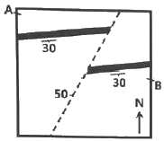
- 정단층
- 역단층
- 층상단층
- 좌수주향이동단층
(정답률: 57%)
40. 다음 일차구조 중에서 지층 상하 판단에 이용될 수 없는 것을 모두 고른 것은?
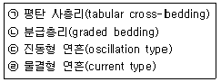
- ㉠, ㉡
- ㉠, ㉢
- ㉠, ㉣
- ㉠, ㉢, ㉣
(정답률: 47%)
3과목: 탐사공학
41. NMO(수직경로시차) 보정과 관련이 없는 인자는?
- 진폭
- 속도
- 거리
- 영 오프셋(zero offest) 시간
(정답률: 60%)
42. 그림과 같이 심도 h1 및 h2인 시추공 내의 두지점에서 중력측정치가 각각 g1 및 g2 mGal일 때 h1과 h2사이의 지층의 밀도 ρ를 구하는 공식은? (단, 아래 공식 중 기호는 △g=g2-g1, △h=h2-h1, △gf=free air correction치 즉 0.3086△h mGalm K=2πγ, γ=중력상수 즉 6.67×10-11 mGal)
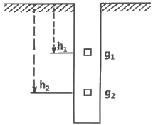
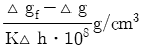
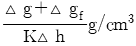
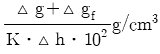
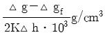
(정답률: 40%)
43. 지열원인 용암 내의 물리적 성질과 탐사법에 대한 설명으로 옳은 것은?
- 용암은 낮은 전기비저항을 보이므로 MT탐사가 유효하다.
- 액상의 용암에서는 P파의 속도가 높아지므로 탄성파 탐사가 유효하다.
- 암석의 온도가 매우 높아지면 자성이 극대화 되므로 자력탐사가 유효하다.
- 용암에서는 S파의 진폭이 증가하므로 원거리 지진자료로부터 탐사가 가능하다.
(정답률: 60%)
44. 다음 중 우라늄(U) 광상의 지시원소는?
- As
- B
- Zn
- Rn
(정답률: 63%)
45. 유도분극탐사(IP)에서 저주파수 비저항은 1200Ωㆍm, 고주파수 비저항은 1000Ωㆍm일 때 백분율 주파수 효과(PFE)는?
- 10%
- 15%
- 20%
- 25%
(정답률: 65%)
46. 다음 중 자연잔류자화의 종류에 대한 설명으로 틀린 것은?
- 등온 잔류자화는 일정한 온도하에서 짧은 시간동안만 존재하고 사라지는 외부자기장에 의해 발생한다.
- 열 잔류자화는 자성물질이 높은 온도로부터 큐리 온도를 거쳐 서서히 식어갈 때 외부 자기장에 의해 발생한다.
- 점성 잔류자화는 암석이 약한 외부자기장을 오랫동안 받아서 발생한다.
- 화학 잔류자화는 콜로이드 상태의 세립질 물질이 퇴적되면서 발생한다.
(정답률: 70%)
47. 다음 중 중력 탐사에 있어서 측점과 기준면 사이의 물질에 대한 보정방법으로 옳은 것은?
- 부게 보정
- 위도 보정
- 지형 보정
- 프리에어 보정
(정답률: 70%)
48. 방사능 탐사에 있어서 탐사의 적용성과 현장조사 시 유의점에 대한 설명 중 틀린 것은?
- 방사능 자연배경치는 주로 지구 외부로부터 오는 우주선이나 화강암에 많이 포함되어있는 K40, 그리고 대부분의 암석에 존재하는 소량의 우라늄이나 토륨 등에 의한 것이다.
- 알칼리장석을 많이 함유하는 화강암의 기반구조나 사암과 셰일의 경계면 구분 등 지질조사에도 활용이 가능하다.
- 항공탐사는 우라늄이나 토륨 이외에 탄탈륨이나 저어콘을 함유하는 중광물이나 티타늄 탐사에도 적용이 가능하다.
- 항공탐사 시 방사능 강도는 지형의 영향을 많이 받고 공기 중에서 γ-선의 산란과 흡수에 의하여 상공으로 갈수록 증가하므로 일정한 고도를 유지하여 측정하여야 한다.
(정답률: 53%)
49. 지열에 관한 설명 중 틀린 것은?
- 단위면적당 지열의 발산량은 암석의 열전도도와 지온구배의 곱과 같다.
- 심부 용암 또는 용암상태의 암석 전기전도도가 비정상적으로 낮다는 점이 지열탐사의 지침이 된다.
- 지하 심부로부터 지표면에 도달하는 열에너지의 이동은 주로 열전도에 의한 것과 고온의 유체 방출에 의한 것의 두 가지 과정에 의해 일어난다.
- 현재 지표면에서 상실되고 있는 지열의 대부분은 반감기가 매우 긴 방사성 동위원소의 붕괴에 의하여 나머지는 지구 자체의 냉각에 의한 것으로 이해되고 있다.
(정답률: 51%)
50. 탄성파의 감쇠 메커니즘이 아닌 것은?
- 분극
- 산란
- 고유감쇠
- 구형발산
(정답률: 69%)
51. 다음 중 탄성파 탐사에서 이용되고 있지 않는 것은?
- 굴절
- 반사
- 전도
- 회절
(정답률: 80%)
52. 지자기북극은 지구중심에서 회전축과 약 몇 도 기울어져 있는가?
- 0°
- 6.5°
- 11.5°
- 23°
(정답률: 68%)
53. 다음 중 지하투과 레이더 탐사법(GPR)에 대한 설명으로 틀린 것은?
- 수 십 MHz~수 GHz 주파수 대역의 전자기 펄스를 이용한다.
- 매질간의 유전율의 차이에 의한 전자기파의 반사와 회절현상 등을 측정하고 이를 해석하여 지질구조를 파악한다.
- 비가 온 뒤에는 결과가 왜곡될 수 있다.
- 점토층 지역의 경우 높은 전기전도도에 의해 전자기파의 심도에 따른 감쇠가 작아 상대적으로 높은 탐사 적용성을 가진다.
(정답률: 62%)
54. 다음 중 전기비저항 검층법에 해당하지 않는 것은?
- 노말 검층
- 음파 검층
- 레터럴 검층
- 전자유도 검층
(정답률: 64%)
55. 포텐셜 이론(Potential theory)을 적용받지 않는 탐사법은?
- 자력 탐사
- 중력 탐사
- 탄성파 탐사
- 전기비저항탐사
(정답률: 42%)
56. 암석이나 잔류토양을 시료로 맥상 금광상을 추적하기 위해 가장 적합한 지시원소는?
- Hg
- As
- Zn
- Se
(정답률: 80%)
57. 지하투과 레이더 탐사법(GPR)에서 레이더파의 반사계수에 가장 큰 영향을 미치는 것은?
- 전기전도도
- 유전율
- 투자율
- 대자율
(정답률: 74%)
58. 단면적이 1m2, 길이가 5m인 시험편의 저항을 측정한 결과 6000Ω이었다면 전기비저항은?
- 1000Ωm
- 1100Ωm
- 1200Ωm
- 1300Ωm
(정답률: 83%)
59. 다음 중 자연전위(SP) 탐사 시 자연전위의 크기가 가장 높게 나타나는 광체는?
- 규산염 광체
- 산화물 광체
- 탄산염 광체
- 황화물 광체
(정답률: 65%)
60. 다음 중 별도의 송신원을 필요로 하지 않는 탐사법은?
- 인공분극법
- 유도분극법
- 자연전위법
- 항공전자탐사법
(정답률: 76%)
4과목: 지질공학
61. 현무암질 모암에서 풍화된 토양의 비중을 설명한 것으로 옳은 것은?
- 유기물질의 함량이 증가하면 비중이 커진다.
- 유색광물이 많이 들어 있을수록 비중이 크다.
- 유색광물이 많이 들어 있을수록 비중이 작다.
- 유기물질의 함량이 증가해도 비중의 변화는 없다.
(정답률: 60%)
62. 댐(Dam) 기초 지반에 대하여 기초처리를 할 때 지수(止水)를 목적으로 댐 중심부에 설치하는 그라우팅 공법은?
- 커튼 그라우팅(Curtain Grouting)
- 백필 그라우팅(Back Fill Grouting)
- 브랑케트 그라우팅(Blanket Grouting)
- 컨솔리데이션 그라우팅(Consolidation Grouting)
(정답률: 68%)
63. 절리면의 거칠기에 따른 전단 거동을 정량적으로 평가하기 위하여 사용되는 측정기구는?
- 슈미트햄머
- 클리노미터
- 점하중 장치
- 프로파일 게이지
(정답률: 62%)
64. 기초 지반의 지지력과 예상 침하량을 추정하기 위해 현장에서 실시하는 시험법은?
- CBR시험
- 평판재하시험
- 패커시험
- 베인전단시험
(정답률: 71%)
65. 토사에서 암반까지 다양한 지반에 적용이 가능하고 굴진성능이 우수하며, 공저 지반의 교란이 적어 지반조사에서 폭넓게 사용되는 시추방법은?
- 오거 시추(auger boring)
- 수세식 시추(wash boring)
- 회전식 시추(rotary boring)
- 충격식 시추(percussion boring)
(정답률: 72%)
66. 다량의 지하수를 함유하고 있지만, 수리전도도가 낮아 경제적으로 지하수를 개발하기 어려운 산출량을 갖는 지층은?
- 준대수층
- 부유대수층
- 피압대수층
- 자유면대수층
(정답률: 58%)
67. 사면에서의 암반분류법으로 사용되는 SMR법에서 고려되는 보정요소로 옳지 않은 것은?
- 굴착방법
- 평면파괴 시 불연속면의 경사각
- 불연속면과 절취사면의 주향차이각
- 불연속면과 절취사면 마찰각의 상관관계
(정답률: 41%)
68. 암반분류법 중 Barton 등이 제시한 Q-system에서 고려되는 요소가 아닌 것은?
- 암질지수(RQD)
- 절리의 표면거칠기
- 절리의 주향과 경사
- 지표수 및 지하수의 영향
(정답률: 58%)
69. 2층의 수평 퇴적층이 있다. 첫 번째 층의 두께는 10m, 수평받향 투수계수는 5×10-3cm/s이고, 두 번째 층의 두께는 20m, 수평방향 투수계수는 2×10-3cm/s일 때 수평방향의 평균 투수계수는?
- 2×10-3cm/s
- 3×10-3cm/s
- 4×10-3cm/s
- 5×10-3cm/s
(정답률: 72%)
70. 물의 모세관 현상에서 모세관 상승높이와 비례하는 것은?
- 물의 온도
- 모세관의 반경
- 물의 단위중량
- 물의 표면장력
(정답률: 71%)
71. 흙의 일축압축강도시험에서 압축강도는 2.5kg/cm2, 파괴면과 수평면이 이루는 각도는 50°이었을 때, 이 흙의 내부마찰각(ø)은?
- 10°
- 20°
- 30°
- 40°
(정답률: 34%)
72. Terzaghi 압밀 이론식의 가정 중 옳지 않은 것은?
- 점토층은 균질하다.
- Darcy의 법칙은 성립한다
- 점토층은 불포화되어 있다.
- 물 자체의 압축성은 무시한다.
(정답률: 66%)
73. 어떤 토양의 시료를 채취하여 분석할 때 시료의 공극비(Void ratio)를 나타내는 식으로 옳은 것은? (단, V:시료의 체적, Vv:공극의 체적, Vs:입자만의 체적)
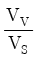
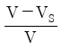
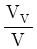
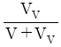
(정답률: 58%)
74. 다음 중 암석의 일축암축강도시험 결과에 영향을 미치는 요소가 아닌 것은?
- 암석 시편의 모양
- 암석 시편의 크기
- 암석 시편의 수분함량
- 암석 시편의 단위 중량
(정답률: 51%)
75. 암반 물성에 미치는 물의 영향에 대한 설명 중 옳지 않은 것은?
- 공극압을 발생시켜 다공질 무결함의 경도를 감소시킨다.
- 암반에 대한 침식을 일으킨다.
- 암반의 불연속면에 침투하여 암반의 강도를 증가시킨다.
- 화학적 반응을 촉진시켜 화학조성의 변화를 일으킨다.
(정답률: 77%)
76. 다음 중 산사태에 대한 설명으로 틀린 것은?
- 산사태는 전단강도 초과로 인해 한 개 혹은 그 이상의 붕괴면을 따라 미끄러지는 토체 또는 암체의 움직임이다.
- 산사태는 일반적으로 토석류를 일으킬 수 있는데, 이는 불포화된 물질조건에서 발생하는 경향이 있다.
- 회전형 산사태는 점성이 있고 균질한 토층에서 일반적으로 발생한다.
- 전이형 산사태는 붕괴 메커니즘이 단순한 기하학적 구조를 가지므로 회전형 산사태에 비해 빠르게 발생한다.
(정답률: 64%)
77. 다음 그림과 같이 토층의 전체가 물속에 잠겨 있을 때 토층의 깊이 z에서 한 요소가 받는 전연직응력은? (단, 지하수면의 높이 hw=5m, 토층의 깊이 z=10m, 흙의 포화단위중량 γsat=1.9t/m3이다.)
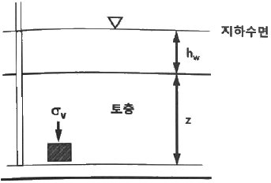
- 14t/m2
- 19t/m2
- 24t/m2
- 30t/m2
(정답률: 54%)
78. 시간-수위강하 자료로부터 대수층의 매개변수를 결정할 경우 자유면 대수층의 투수계수를 구하는 식은? (단, K:수리전도도, Q:양수량, b1:양수정거리 r1에서의 포화두께, b2:양수정거리 r2에서의 포화두께)(오류 신고가 접수된 문제입니다. 반드시 정답과 해설을 확인하시기 바랍니다.)
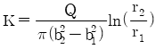
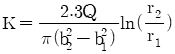
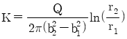
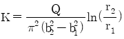
(정답률: 49%)
79. 같은 암석에서의 강도 비교가 옳은 것은?
- 압축강도＞인장강도＞전단강도
- 압축강도＞전단강도＞인장강도
- 전단강도＞압축강도＞인장강도
- 전단강도＞인장강도＞압축강도
(정답률: 60%)
80. 다음 중 암반에서의 불연속면을 공학적으로 평가하고자 할 때 측정할 요소들로만 묶여진 것이 아닌 것은?
- 절리의 주향(Strike), 단층의 경사(Dip)
- 절리군의 개수, 절리의 틈새(Opening)
- 절리의 굴곡도(Roughness), 단층면의 만곡도(Wavingess)
- 절리의 연장성(Persistence), 모든 절리들의 표면적
(정답률: 45%)
5과목: 광상학
81. 광상의 생성온도를 결정하는데 가장 관계가 없는 것은?
- 포획암
- 광석광물
- 동위원소비
- 유체표유물
(정답률: 46%)
82. 광상형성 시 열수용액의 물리-화학적 특성을 추정하기 위해 석영맥을 포함한 변질대의 암석을 채취하였다. 시료 내에 보존된 유체표유물을 대상으로 지질정도를 획득하려고 할 때, 측정할 수 있는 정보가 아닌 것은?
- 염농도
- 탄산가스량
- 충진온도
- 모암의 성분
(정답률: 56%)
83. 전라남도 해남지역에 분포하는 광상의 유형은?
- 스카른 금광상
- 천열수 기원 금광상
- 화산열수 기원 철광상
- 변성작용에 의한 흑연광상
(정답률: 52%)
84. 망간단괴의 화학조성 중 가장 많은 것은?
- MnO2
- FeO
- SiO2
- H2O
(정답률: 80%)
85. 주요 산업원료광물(비료, 화학공업용) 등으로 사용되는 인광상(guano)의 성인으로 적합한 것은?
- 기성광상
- 천열수광상
- 퇴적광상
- 정마그마광상
(정답률: 59%)
86. 다음 중 열극충진광상의 광맥에서 관찰되는 조직으로 열수에 의한 불완전한 충진에 의하여 남겨진 공간 조직은?
- 정동조직
- 호상조직
- 누피조직
- 교질상 조직
(정답률: 52%)
87. 조선누충군 석회석광상의 특징이 아닌 것은?
- 주로 대석회암층군(풍촌석회암, 막동석회암)에 부존되어 있다.
- 분포지역으로는 강원도 중부와 남부, 충북 북부지역이 해당된다.
- 지질연대로는 석탄기말이 대부분이다.
- 과거 해변의 온난한 기후 아래 산화환경에서 퇴적되었던 것으로 사료된다.
(정답률: 66%)
88. 점토광물을 감정하는데 주로 이용되는 기구는?
- 편광현미경
- 방출분광분석기구
- X선 회절기구
- 미경도측정기구
(정답률: 63%)
89. 반암동 광상의 2차 부화대에 관한 설명 중 옳은 것은?
- 황동석이 침전된다.
- 수직적으로 산화대와 초생광체 사이에 위치한다.
- 수평적으로 파이프상으로 발달한다.
- 지하수면 상위에서 형성된다.
(정답률: 44%)
90. 열수유체 내의 H2S가 지표 부근에서 산화되어 유체는 산성을 띠며, 이와 같은 결과로 만들어지는 변질대의 분대 순서로 옳은 것은?
- 석영→고령토→명반석→견운모
- 석영→명반석→견운모→고령토
- 석영→고령토→견운모→명반석
- 석영→명반석→고령토→견운모
(정답률: 38%)
91. 유기적 퇴적물이 아닌 것은?
- 백악
- 암염
- 규조토
- 아스팔트
(정답률: 61%)
92. 텅스텐과 더불어 합금(고속도강, 스테인리스강), 전자공업용(진공관 격자재료, 촉매, 정류기판), 화학공업용(안료, 착색화합물), 원자력용으로 사용되는 주요 산업원료광물 중의 하나인 몰리브덴광의 주요 광석광물이 아닌 것은?
- 수연철석(Molybdite)
- 황연석(Wulfenite)
- 폴리디마이트(Polydymite)
- 포엘석(Powellite)
(정답률: 50%)
93. 화강암 중의 장석, 운모, 각섬석 등이 광화가스의 교대작용으로 리티아 운모(lithia mica)로 변화하고 동시에 소량의 황옥, 형석, 석석 등이 생기며, 또한 새로운 석영이 다량 생기게 하는 모암변질작용은?
- 규화 작용
- 그라이젠화 작용
- 리티아 운모화 작용
- 프로필라이트화 작용
(정답률: 49%)
94. 우리나라에서 토상흑연이 주로 나오는 지층은?
- 제3계
- 경상계
- 연천계
- 옥천계
(정답률: 44%)
95. 풍화잔류광상과 관계가 적은 것은?
- 기후
- 습도
- 용해도
- 박테리아
(정답률: 76%)
96. 다음 중 변성의 정도가 가장 높은 암석은?
- Slate
- schist
- phyllite
- argillite
(정답률: 48%)
97. 다음 중 무극광산의 주료 광석광물은?
- 방연광
- 자연은
- 섬아연광
- 에렉트럼
(정답률: 36%)
98. 석탄의 탄화정도에 의한 분류에서 낮은 탄화도로부터 높은 탄화도의 순서로 올바르게 배열된 것은?
- 토탄→갈탄→역청탄→무연탄
- 갈탄→토탄→역청탄→무연탄
- 갈탄→토탄→무연탄→역청탄
- 역청탄→갈탄→토탄→무연탄
(정답률: 64%)
99. 1000~4000m 깊이에서 150~1000kg/cm2의 압력과 200~300℃ 조건하에 형성된 것으로 알려진 광상은?
- Epithermal
- Telethermal
- Katathermal
- Mesothermal
(정답률: 52%)
100. 다음 중 화강암질 마그마의 분별작용 결과 배반원소(incompatible elements)들이 농집되어 생성시키는 일반적인 광상의 형태는?
- 호상 철광상
- 마그마 분화 광상
- 페그마타이트 광상
- 스카른 광상
(정답률: 55%)